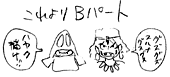
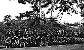

結婚披露パーティ・壁の絵は近藤喜文さん
|
 絵コンテ・Bパート冒頭の書き込み |
95.10.02 （月）
既に上がっていたＢパート冒頭の絵コンテを改訂し、それを含めて絵コンテ51 CUT分追加、計 391 CUTとなる。
「耳をすませば」のリハビリも兼ね、原画として近藤喜文氏ＩＮ。
95.10.05 （木）
制作部・西桐共昭、仕上部・小野暁子夫妻の結婚披露パーティが、ジブリのバーで行われる、つまり社内結婚。ジブリ初の披露パーティの為、出し物等で社員全員が異常な盛り上がりを見せる。
95.10.12（木）
第23回企画検討会「約束の庭」が行われる。
95.10.16（月）
イマジカで日米（イマジカとシネオン）のデジタル合成の画像比較ラッシュを行う。数年前までは、シネオンが圧倒的に優位に立っていたが、現在は性能的な差はなし。「もののけ姫」はイマジカのデジタル合成を使う事になる。
95.10.25（水）
年末ジブリフォーラム3連発の第一弾として、ロシアのアニメーション作家ユーリ・ノルシュテイン氏がジブリを訪れ、講演会を行う。また、最初の監督作品「25日 最初の日」や日本では見られないＣＭ作品などの上映も行われる。
95.10.26（木）
撮影開始前に毎回実施している、フジとコダックのフィルムを選択する為のテストラッシュを、イマジカで今回も行う。フジは全体に青すぎ、コダックは赤が目立ち、結論が出ず。
95.10.27（金）
フジのプリントを焼直し、コダックのフィルム2本と共にジブリで再度フィルムテスト。最終的に今回はコダックの48（EXR100T 5248）に決定する。ただし、まだ赤が少し目立つとの色指定保田さんからの指摘があり、タイミングを変えることで対処する予定。
太陽色彩、スタックの両絵の具会社のキャパシティの関係上、新色21色をクロマカラーに発注。
95.10.29（日）
ジブリ社員総勢約75人の大部隊が、2泊3日の社員旅行に、奈良へ出発。昨年とまったく同じ目的地、同じ宿。ただし宮崎監督、安藤作画監督は不参加。

| 次のページへ |
| 日誌索引へ戻る |
| 「もののけ姫」トップページへ戻る |